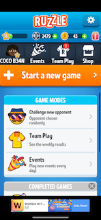

To whom it may concern, my name is RaShae Wright and I am very proud to admit that I am a nerd. Alot of times in life people feel like if you're pretty in their opinion, it means that you're incapable of being smart.
Background
My personal life experiences have taught me that, unfortunately, in this society, skin that holds a darker hue, high self confidence despite flaws and short-comings, and the ability to be an independent thinker all lead people to insinuates stupidity as well.
Personal
My favorite hobbies include writing, learning, teaching and experiencing any aspect related to education as a whole. Every single game that I have installed on my phone is a word game, and one of my favorite website to use is openlibrary.org. I also pat myself on the back for having made the Dean's List last semester as a first semester college student.
Advice
A small message that I like to spread to not only other women who look like me, but to people all over is to tune out the noise. Sometimes people will have determined their dislike for you even before they met or had a single conversation with you. Your educational accomplishments can never be taken away from you, so as long as you know who you are despite your flaws, the opinions of other simply do not matter.